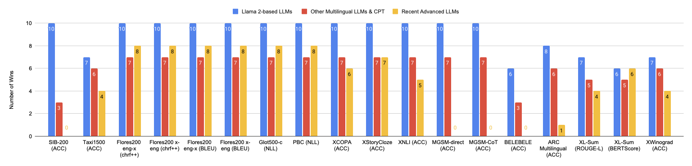

Abstract
In this work, we present the MaLA (Massively multilingual Language Adaptation) suite, a comprehensive collection of open-access resources designed to advance language technology across 546 languages. The primary contribution is the MaLA corpus, a 74-billion-token dataset specifically engineered for the continual pre-training of large language models (LLMs). To ensure high utility and robustness for various tasks, we introduce a diverse data mix that balances underrepresented languages with curated high-resource data. This mix includes: (1) structured scientific literature; (2) literary archives; (3) multilingual instruction sets; and (4) programming data. We document the corpus provenance and sampling strategies—upsampling low-resource and downsampling high-resource languages—to reduce forgetting (particularly in code generation) while expanding language capacity. Leveraging this resource, we release EMMA-500, a Llama 2-based model optimized for cross-lingual transfer and language adaptability. Beyond the model weights, we provide the full suite of scripts, processing pipelines, and model generations to support reproducibility and further experimentation in multilingual indexing and retrieval. We release the MaLA suite, including the MaLA corpus, EMMA-500 model weights, scripts, and model generations, under open licenses to provide the community with the testbeds and tools necessary to evaluate and improve global information access.

Overview
As the field of multilingual LLMs evolves, the role of data becomes increasingly critical in enhancing performance, particularly for low-resource languages. The MaLA suite addresses the crucial need for high-quality, diverse data in massively multilingual continual pre-training (CPT). It introduces a new 939-language corpus, a 136B-token training mix, and the EMMA-500 demonstration model. By diversifying text types (including code, books, scientific papers, and instruction data), MaLA ensures robust adaptation across a wide array of linguistic contexts without regressing on specialized capabilities like programming.
Key Contributions
-
1 We compile a massively multilingual corpus named MaLA to facilitate continual training of large language models for enhanced language adaptation across a wide range of linguistic contexts.
-
2 We extend the MaLA corpus by integrating multiple curated datasets, creating a comprehensive and diverse data mix specifically for continual pre-training.
-
3 We perform continual pre-training with the Llama 2 7B model on the multilingual corpus with 546 languages, resulting in the new EMMA-500 model. This model is rigorously evaluated on a diverse set of tasks and benchmarks.
The MaLA Corpus
Our multilingual corpus features the following characteristics:
- • It contains 939 languages, (546 of which are used for training our EMMA-500 model) and 74 billion (B) whitespace delimited tokens in total.
- • It has more than 300 languages with over 1 million whitespace delimited tokens and 546 languages with over 100k tokens.
- • It comes with four publicly available versions: (1) noisy, (2) cleaned, (3) deduplicated, and (4) split. Rather than releasing a single opaque dump, this staged release along with our processing scripts allows practitioners to inspect, reproduce, or construct alternative custom mixes from the staged resources.
- • Our augmentation to the MaLA corpus includes different types of texts such as code, books, scientific papers and instruction data, leading to a data mix with 100B+ whitespace delimited tokens.
Data Inventory
| Dataset Repository | Size | Description |
|---|---|---|
|
|
2.14B | The MaLA monolingual corpus's noisy version that integrates texts from different sources without cleaning. |
|
|
1.42B | The MaLA monolingual corpus's filtered version that performs further data filtering. |
|
|
969M | The MaLA monolingual corpus's deduplicated version that removes repeated data points. |
|
|
825M | The MaLA monolingual corpus's final version is processed by splitting the filtered and deduplicated version into training and test sets. |
|
|
44.9M | The first version of the MaLA code and reasoning dataset used for training EMMA-500. |
Evaluation Results
To evaluate downstream impact beyond intrinsic language modeling, we benchmark on a comprehensive suite of 9 task families across 15 benchmarks (including translation, classification, commonsense reasoning, natural language inference, summarization, math, and code generation). In a comparison with decoder-only LLMs, our model achieves strong results:
- • Out of models with parameter sizes from 4.5B to 13B, our model with 7B parameters has the lowest negative log-likelihood according to an intrinsic evaluation.
- • Our model remarkably improves the performance of commonsense reasoning, and machine translation over Llama 2-based models and multilingual baselines, and outperforms the latest advanced models in many cases.
- • Our model improves the performance of text classification and natural language inference, outperforming all Llama 2-based models and LLMs designed to be multilingual.
- • While math and machine reading comprehension (MRC) tasks are challenging for the Llama 2 7B model and other multilingual LLMs, our model remarkably enhances the Llama 2 base model. Our model yields improved performance on MRC over the base model but still produces quasi-random results similar to other multilingual baselines.
- • We demonstrate that massively multilingual continued pre-training does not necessarily lead to regressions in other areas, such as code generation, if the data mix is carefully curated. Our model surpasses the Llama 2 7B base model's code generation abilities.
BibTeX
@inproceedings{ji2026mala,
title = {MaLA: A Corpus and Data Mix for Massive Language Adaptation of Large Language Models},
author = {Ji, Shaoxiong and Li, Zihao and Paavola, Jaakko and Lin, Peiqin and Chen, Pinzhen and O'Brien, Dayy{\'a}n and Luo, Hengyu and Sch{\"u}tze, Hinrich and Tiedemann, J{\"o}rg and Haddow, Barry},
booktitle = {Proceedings of Conference on Language Modeling (COLM 2026)},
year = {2026},
url = {https://www.olaresearch.org/MaLA/}
}